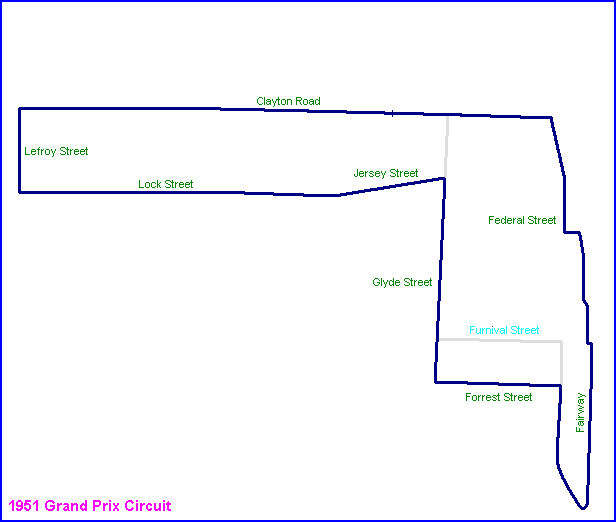

| Map of circuit location |
Narrogin, Australia
| Type: | Street Circuit | |
| Length: | 4.375 Miles / 7.041 km (Grand Prix) 2.200 Miles / 3.540 km ('Flying 50) |
|
| Used: | 1951 (Grand Prix) 1948-1955 ('Flying 50) |
|
| Photos Taken: | 19th August, 2004 |
Please select the circuit variant you wish to tour:
Grand Prix Circuit | Great Southern Flying 50 Circuit

Return to racingcircuits.net's Photo Archive Main Index
Photographs and information kindly supplied by Neil Fackerell